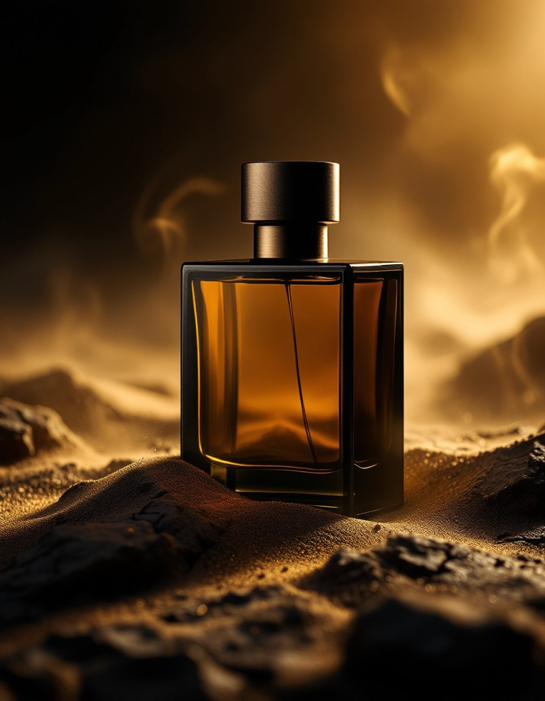
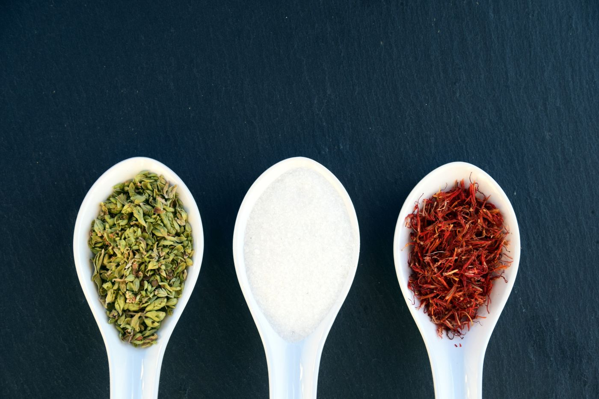

Heat at the gate
- Saffron
- Black Pepper
- Bergamot
- Cardamom
The wind that carries the desert.
One scent. Saffron and black pepper at the gate, oud and incense in the smoke, amber and leather on the skin. We make a single fragrance — and we make it without compromise.

“It begins as heat,
and ends as skin.”
The sirocco is the hot wind that lifts off the Sahara at nightfall and crosses the sea before dawn. It carries sand, dried spice, and the smoke of the souk — warm, restless, impossible to ignore. We spent three years chasing that exact moment: the instant the day's heat turns golden and the air goes heavy with resin.
Our perfumer built SIROCCO around a rare Assam oud and a saffron tincture aged for nine months, then grounded it in Levantine amber and a soft, worn leather. It opens loud and bright, settles into incense and smoke, and dries down to something that smells like warm skin in cold weather — the reason people lean in.
Idris MarénMaster Perfumer · Grasse, France
SIROCCO unfolds in three acts — the arrival, the smoke, the embers. Hover each to read its story.
Heat at the gate
A heart of resin
Skin and leather
A cool-weather, after-dark signature. Worn close, it reads intimate; sprayed twice, it fills a room. Built for the man who wants one scent that becomes his.
Saffron, oud and black amber. A single, uncompromising signature — concentrated to extrait strength so a little lasts the whole night.
“Three people asked what I was wearing on the first night. Smoky but warm — never harsh. This is my signature now.”
“Tried the $6 sample first, wore it once, and ordered the bottle the next morning. The drydown on skin is unreal.”
“Bought it for my husband and now I steal it. That saffron opening is intoxicating — utterly addictive.”
“Genuinely lasts all day — still on my jacket the next morning. Wanted a touch more freshness up top, hence 4 stars.”
“I've worn a lot of niche oud scents. This is the first that smells like skin, not a department store counter.”
“A compliment magnet in cold weather. Two sprays and it fills the room without ever screaming for attention.”
“The 24% concentration is no joke. A little goes a long way — this bottle is going to last me the whole year.”
“The scent, the bottle, the whole story — it feels like a $300 fragrance. Easily my favourite buy this year.”
Most houses launch a dozen scents a year. We've spent three on one. Every batch is poured in small lots in Grasse, aged eight weeks before it ships, and signed by the perfumer who made it.

Grasse,
France
Order the 2ml travel atomizer, live with it for a week, and decide on your own skin. Keep it? We credit the full $6 toward your bottle. It's the honest way to buy fragrance.
As a 24% extrait, expect 12–16 hours on skin and several days on clothing. Two sprays is plenty — this is a concentration, not an eau de toilette.
Worn close (one spray to the chest) it stays intimate and skin-like. It's a cool-weather, after-dark scent by design, but a single spray works through the day.
Return it within 30 nights for a full refund — even if the bottle is opened. We'd rather you wear something you love.
It's built around classically masculine accords — oud, leather, amber, spice — but scent has no gender. Plenty of our wearers share a bottle.
One email a month — new batches, the stories behind the notes, and early access. No noise.
No spam. Unsubscribe anytime.